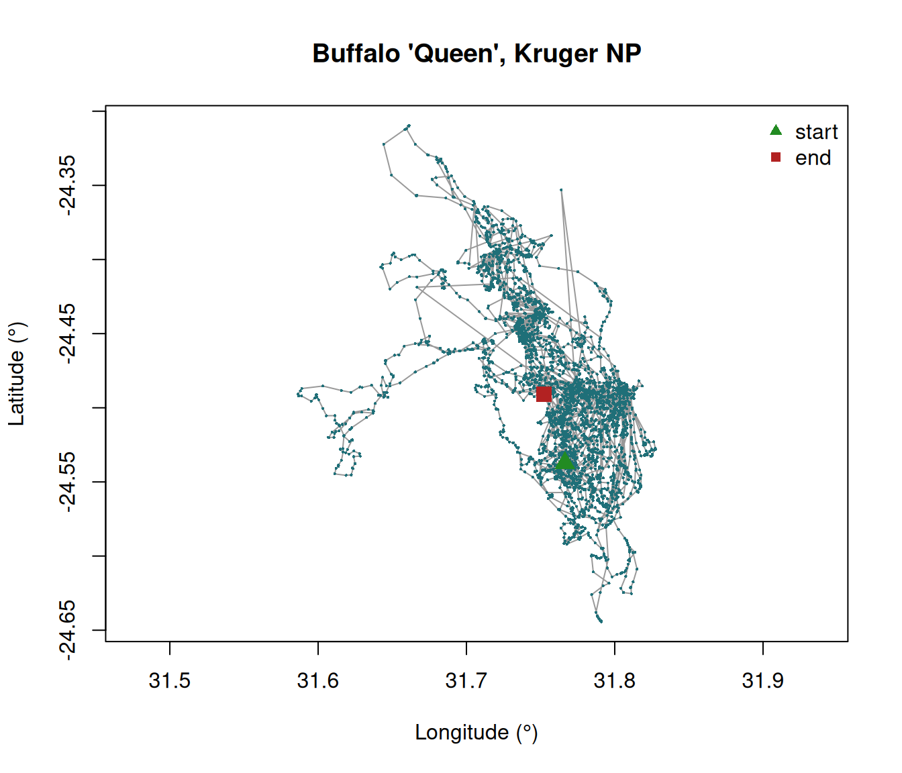
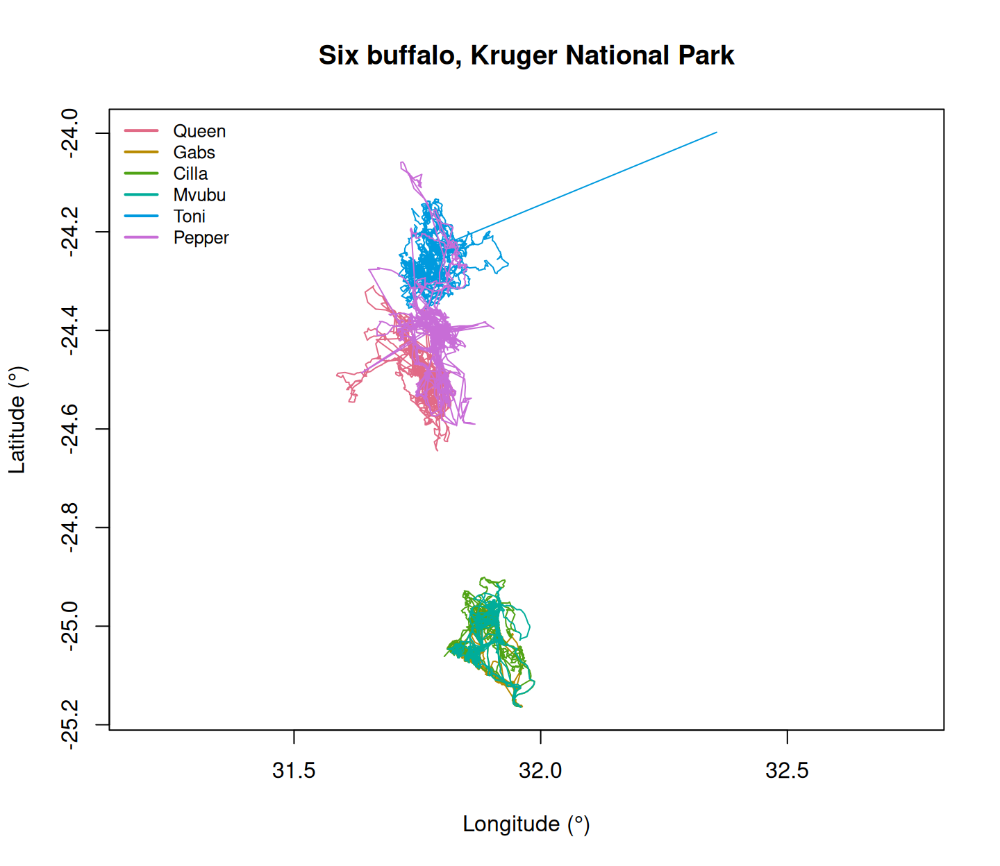
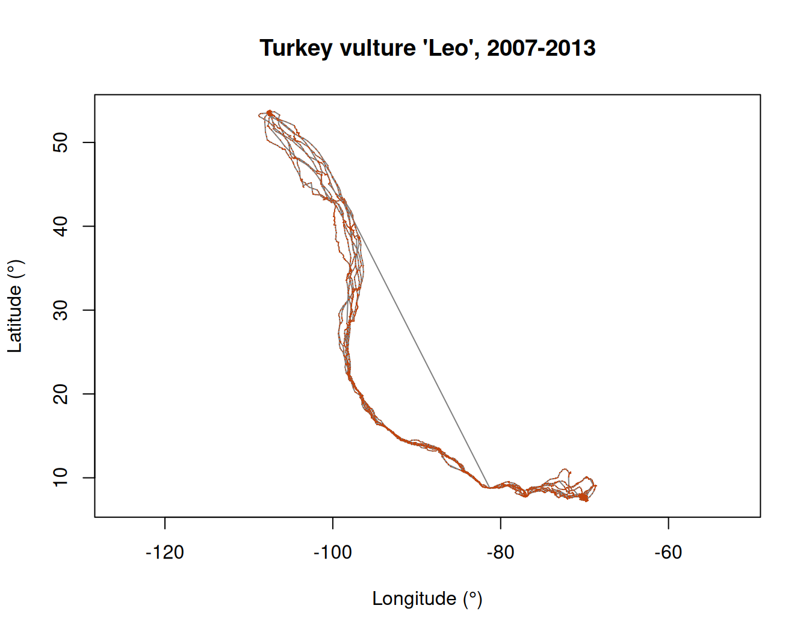
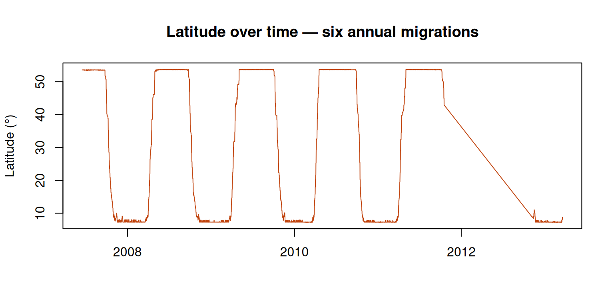

sessionInfo()
need <- c("sf", "terra", "move2", "amt", "adehabitatHR", "ctmm",
"moveHMM", "survival", "dplyr", "ggplot2", "mapview")
for (p in need) {
ok <- requireNamespace(p, quietly = TRUE)
cat(sprintf("%-14s %s\n", p, if (ok) as.character(packageVersion(p)) else "** MISSING **"))
}Exercise 1 — First contact with a track
Class 1 · Theme 1
Goals. Confirm your installation works; read a real Movebank file; find out what is actually in it; compute a fix rate and a fix success rate; plot a trajectory using nothing but base R.
Time: ~50 minutes. Packages: none — base R only, on purpose.
Tip
Work inside the course RStudio project (animtrack-2627.Rproj). Then the path data/buffalo_kruger.csv.gz resolves without you editing anything.
Task 0 — Does your installation work?
If anything says MISSING, go back to the setup page now — you will need all of these by Class 3.
Task 1 — Read the data
R reads gzipped CSV directly. No need to decompress anything.
buffalo <- read.csv("data/buffalo_kruger.csv.gz", stringsAsFactors = FALSE)
dim(buffalo)
#> [1] 28410 18
names(buffalo)
#> [1] "event.id" "visible"
#> [3] "timestamp" "location.long"
#> [5] "location.lat" "behavioural.classification"
#> [7] "comments" "manually.marked.outlier"
#> [9] "sensor.type" "individual.taxon.canonical.name"
#> [11] "tag.local.identifier" "individual.local.identifier"
#> [13] "study.name" "utm.easting"
#> [15] "utm.northing" "utm.zone"
#> [17] "study.timezone" "study.local.timestamp"
NoteWhy did the column names change?
Movebank uses hyphens: location-long. R identifiers cannot contain hyphens, so read.csv() converts them to dots by default: location.long. You can keep the originals with check.names = FALSE, but then you need backticks everywhere — not worth it.
Your turn
1a. How many rows? How many columns? 1b. How many individual animals, and what are they called? 1c. What species, and what sensor type?
NoteSolution
nrow(buffalo)
#> [1] 28410
ncol(buffalo)
#> [1] 18
unique(buffalo$individual.local.identifier)
#> [1] "Queen" "Gabs" "Cilla" "Mvubu" "Toni" "Pepper"
length(unique(buffalo$individual.local.identifier))
#> [1] 6
unique(buffalo$individual.taxon.canonical.name)
#> [1] "Syncerus caffer"
unique(buffalo$sensor.type)
#> [1] "gps"Six buffalo, GPS-collared. Note that table() is more informative than unique() when you also want the number of fixes per animal:
table(buffalo$individual.local.identifier)
#>
#> Cilla Gabs Mvubu Pepper Queen Toni
#> 3556 4831 3491 5163 4997 6372Already a lesson: the animals are not equally sampled. Any summary that pools them without accounting for that is dominated by whichever individual contributed most fixes.
Task 2 — Timestamps are not text
This is the single most important line of code in the whole course.
buffalo$t <- as.POSIXct(buffalo$timestamp, format = "%Y-%m-%d %H:%M:%S", tz = "UTC")
class(buffalo$t)
#> [1] "POSIXct" "POSIXt"
range(buffalo$t)
#> [1] "2005-02-17 05:05:00 UTC" "2006-12-31 14:34:00 UTC"
WarningAlways set
tz
If you omit tz, R silently uses your computer’s time zone. Your analysis then gives different answers on a laptop in Rome and a server in California. Movebank timestamps are UTC. Say so.
Your turn
2a. Over how many days does the study run? 2b. In which months are there most fixes?
NoteSolution
difftime(max(buffalo$t), min(buffalo$t), units = "days")
#> Time difference of 682.3951 days
table(format(buffalo$t, "%Y-%m"))
#>
#> 2005-02 2005-03 2005-04 2005-05 2005-06 2005-07 2005-08 2005-09 2005-10 2005-11
#> 289 752 1290 887 889 1190 3220 4186 4192 3704
#> 2005-12 2006-01 2006-02 2006-03 2006-04 2006-05 2006-06 2006-07 2006-08 2006-09
#> 2574 1425 841 737 626 582 235 197 147 138
#> 2006-10 2006-11 2006-12
#> 108 140 61The monthly counts are very uneven — collars were deployed and failed at different times. This matters: a “seasonal” pattern can easily be a deployment pattern in disguise.
Task 3 — Subset one animal and sort it
Almost every movement calculation assumes the rows are one individual, in time order. Never assume a file arrives sorted.
queen <- buffalo[buffalo$individual.local.identifier == "Queen", ]
queen <- queen[order(queen$t), ]
nrow(queen)
#> [1] 4997
head(queen[, c("t", "location.long", "location.lat")])
#> t location.long location.lat
#> 1 2005-02-17 05:05:00 31.76642 -24.53730
#> 2 2005-02-17 05:05:00 31.76642 -24.53730
#> 3 2005-02-17 06:08:00 31.76442 -24.53931
#> 4 2005-02-17 06:08:00 31.76442 -24.53931
#> 5 2005-02-17 07:05:00 31.76114 -24.54799
#> 6 2005-02-17 08:05:00 31.76080 -24.54703Your turn
3a. Were the rows already in time order? 3b. Are there repeated timestamps?
NoteSolution
# Was the original order already sorted in time?
queen_raw <- buffalo[buffalo$individual.local.identifier == "Queen", ]
is.unsorted(queen_raw$t)
#> [1] FALSE
# Repeated timestamps?
sum(duplicated(queen$t))
#> [1] 452There are duplicated timestamps — the collar transmitted the same fix more than once. Across the whole file:
sum(duplicated(buffalo[, c("individual.local.identifier", "timestamp")]))
#> [1] 3747Roughly 13% of the file. We will remove these properly in Class 3; today just register that real data arrive dirty, and that you only find out by looking.
Task 4 — Fix interval and fix success
The collar was programmed to attempt a fix on a schedule. What did it actually deliver?
# Drop duplicated timestamps first, or every duplicate creates a zero-length interval
queen_u <- queen[!duplicated(queen$t), ]
dt <- as.numeric(diff(queen_u$t), units = "hours")
summary(dt)
#> Min. 1st Qu. Median Mean 3rd Qu. Max.
#> 3.333e-02 1.000e+00 1.000e+00 2.445e+00 1.000e+00 2.523e+03Your turn
4a. What is the modal (most common) interval? That is the programmed fix rate. 4b. What fraction of intervals are exactly that? This is your fix success rate. 4c. What is the longest gap, and what might explain it?
NoteSolution
# Round to the nearest 0.1 h so near-identical intervals group together
tab <- sort(table(round(dt, 1)), decreasing = TRUE)
head(tab, 5)
#>
#> 1 0.9 0 2 0.1
#> 4203 120 55 42 35
modal_dt <- as.numeric(names(tab)[1])
modal_dt
#> [1] 1
# Proportion of intervals at the programmed rate
mean(abs(dt - modal_dt) < 0.1)
#> [1] 0.9515845
# The worst gap, in days
max(dt) / 24
#> [1] 105.1167The modal interval is the programmed schedule. Everything longer is a missed fix — the collar tried and failed, or was off.
Long gaps have mundane explanations that matter enormously: battery saving schedules, the animal under dense canopy or in a gorge, the collar temporarily upside-down, or the animal dead and the collar lying face-down.
A cleaner way to count missed fixes — how many scheduled attempts fit in each observed gap:
Task 5 — Your first trajectory plot
No spatial packages. Just points and lines.
plot(queen_u$location.long, queen_u$location.lat,
type = "l", col = "grey60",
xlab = "Longitude (°)", ylab = "Latitude (°)",
main = "Buffalo 'Queen', Kruger NP",
asp = 1)
points(queen_u$location.long, queen_u$location.lat,
pch = 16, cex = 0.3, col = "#1f6f78")
points(queen_u$location.long[1], queen_u$location.lat[1],
pch = 17, cex = 1.6, col = "forestgreen") # start
points(tail(queen_u$location.long, 1), tail(queen_u$location.lat, 1),
pch = 15, cex = 1.6, col = "firebrick") # end
legend("topright", c("start", "end"), pch = c(17, 15),
col = c("forestgreen", "firebrick"), bty = "n")
ImportantThis plot is wrong, and knowing why is the point
asp = 1 forces one degree of longitude to occupy the same screen distance as one degree of latitude. On the ground at 24°S, one degree of latitude is about 111 km, but one degree of longitude is only about 101 km — the map is stretched east–west by roughly a factor of 1.1.
At 24° the distortion is modest. Try the same plot for the vulture, which ranges from 7°N to 54°N, and it becomes severe.
Distances computed from raw degrees are meaningless. Fixing this — properly, with coordinate reference systems — is Class 2.
Your turn
5a. Plot all six buffalo on one figure, one colour each.
NoteSolution
b <- buffalo[!duplicated(buffalo[, c("individual.local.identifier", "timestamp")]), ]
ids <- unique(b$individual.local.identifier)
cols <- hcl.colors(length(ids), "Dark 3")
plot(b$location.long, b$location.lat, type = "n", asp = 1,
xlab = "Longitude (°)", ylab = "Latitude (°)",
main = "Six buffalo, Kruger National Park")
for (i in seq_along(ids)) {
d <- b[b$individual.local.identifier == ids[i], ]
d <- d[order(d$t), ]
lines(d$location.long, d$location.lat, col = cols[i], lwd = 1)
}
legend("topleft", legend = ids, col = cols, lwd = 2, bty = "n", cex = 0.8)
The individuals overlap heavily but are not identical — the raw material of every question in this course. Do they use the same areas at the same times? Do they avoid each other? Do they respond to the same rivers?
Task 6 — A different animal, a different problem
vulture <- read.csv("data/vulture_leo.csv.gz", stringsAsFactors = FALSE)
vulture$t <- as.POSIXct(vulture$timestamp, format = "%Y-%m-%d %H:%M:%S", tz = "UTC")
vulture <- vulture[order(vulture$t), ]
plot(vulture$location.long, vulture$location.lat, type = "l",
col = "grey50", asp = 1,
xlab = "Longitude (°)", ylab = "Latitude (°)",
main = "Turkey vulture 'Leo', 2007-2013")
points(vulture$location.long, vulture$location.lat,
pch = 16, cex = 0.15, col = "#c1440e")
Your turn
6a. Why would a single home-range estimate for this animal be meaningless? 6b. Plot latitude against time. What do you see?
NoteSolution
plot(vulture$t, vulture$location.lat, type = "l",
col = "#c1440e", xlab = "", ylab = "Latitude (°)",
main = "Latitude over time — six annual migrations")
A clean sawtooth. Leo is not doing one thing: he alternates between two residency phases (Canada, South America) and two directed migrations, and repeats that six times.
A home range computed over the whole track would describe an “area of use” spanning two continents — an area the animal essentially never occupies. It would be arithmetically correct and biologically meaningless.
This is exactly the motivation for Class 6: segment first, then analyse. Note also that latitude-over-time is a remarkably effective diagnostic plot — always look at your coordinates against time before you model anything.
Self-check
You compute diff(t) on a data frame you forgot to sort by time. What do you get?
diff() does exactly what you asked: it subtracts each element from the next, in the order given. Out of order, you get negative time differences, and any speed you compute from them is garbage — often silently, because summary() still returns numbers.
Always order(t) within individual before any step calculation. This is the most common error in beginner movement code.
A collar programmed for hourly fixes returns 14,000 fixes over exactly two years. Roughly what was the fix success rate?
Two years of hourly attempts is 2 × 365 × 24 ≈ 17,520. So 14,000 / 17,520 ≈ 80%, which is a fairly typical figure for a GPS collar on a large mammal in mixed habitat.
The 20% that failed is not noise: if failures concentrate in closed habitat, your data under-represent exactly the places the animal may prefer.
Before Class 2
- Make sure
library(sf)andlibrary(terra)both load without errors. - Look at the Datasets page so the three files are familiar.
- Optional but useful: skim Geocomputation with R, chapter 2.